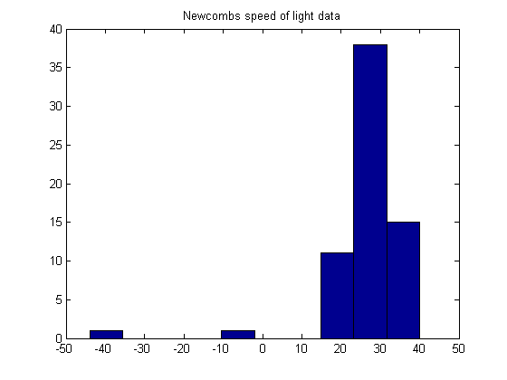
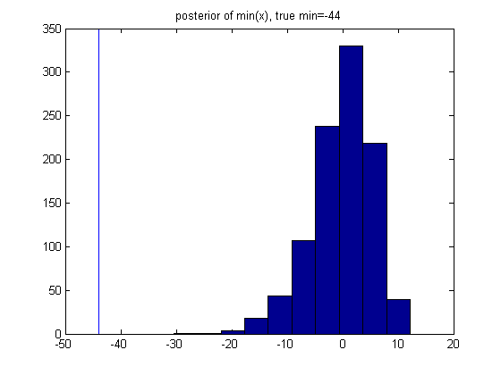

Determine if Newcomb's speed of light data is Gaussian
Example from Gelman04 p77
Contents
% This file is from pmtk3.googlecode.com
setSeed();
Data from http://www.stat.columbia.edu/~gelman/book/data/light.asc
D = [28 26 33 24 34 -44 27 16 40 -2 29 22 24 21 25 30 23 29 31 19 ... 24 20 36 32 36 28 25 21 28 29 37 25 28 26 30 32 36 26 30 22 ... 36 23 27 27 28 27 31 27 26 33 26 32 32 24 39 28 24 25 32 25 ... 29 27 28 29 16 23];
uninformative prior
k0 = 0; v0 = -1; s0 = 0; mu0 =0;
suff stat
xbar = mean(D); n = length(D); s2 = mean( (D-xbar).^2);
posterior
kn = k0+n; mun = (k0*mu0+n*xbar)/kn; vn = v0+n; s2n = (v0*s0 + n*s2 + k0*mu0^2 + n*xbar^2 -kn*mun^2)/vn;
credible interval for mu
low = mun + tinvPMTK(0.025, vn)*sqrt(s2n/kn) %23.5706 high = mun + tinvPMTK(1-0.025, vn)*sqrt(s2n/kn) %28.8537
low = 23.570590683773936 high = 28.853651740468486
generate posterior samples
S = 1000; sigma2 = (1+kn)*s2n/kn; rep = randraw('t', vn, [S, n])*sqrt(sigma2) + mun; figure() hist(D); title('Newcombs speed of light data') figure(); for i=1:20 subplot(5,4,i) hist(rep(i,:)) set(gca,'xlim',[0 50]) %title(sprintf('synth %d', i)) end if ~isOctave suplabel('posterior samples', 't') end
ans =
5.631153564453125e+02
 
compute distribution of test statistic
testVal = zeros(1, S); for s=1:S testVal(s) = min(rep(s,:)); end testValTrue = min(D); figure() hist(testVal); title(sprintf('posterior of min(%s), true min=%d', 'x', testValTrue)) hold on line([testValTrue, testValTrue], get(gca,'ylim'))